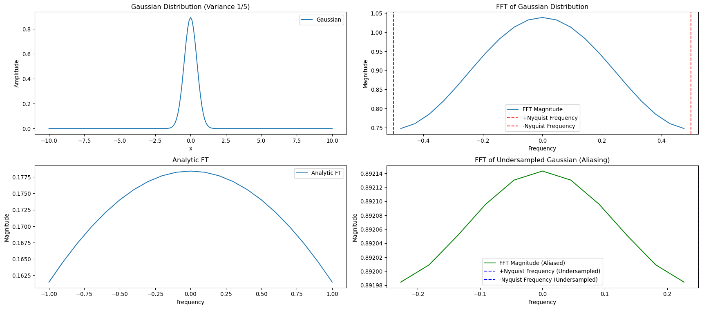

import numpy as np
N = 1000
print(f"N^2 = {N**2}")
print(f"N logN = {N*np.log2(N)}")N^2 = 1000000
N logN = 9965.784284662088Las transformadas de Fourier nos permiten descomponer una función complicada en senos y cosenos. En física tenemos una intuición de cómo funcionan las ondas planas, tal que esa descomposición nos ayuda a entender el sistema.
Otra manera de decirlo es que es fácil encontrar soluciones con la forma de una onda plana para muchas ecuaciones diferenciales parciales.
Como esta clase es muy técnica hacemos un pequeño resumen antes de empezar:
1- Definimos la transformada de Fourier, que es como descomponer una onda en una integral de ondas planas. Cualquier función lo suficientemente bien comportada tiene transformada de Fourier.
2- Definimos la serie de Fourier. Esta nos permite expresar una función periódica como la suma infinita de ondas planas. Esta es como la transfomada de Fourier pero para funciones periódicas y sólo algunos modos de Fourier son distintos de cero.
3- Definimos la transformada discreta de Fourier. En esta, evaluamos la función en un conjunto de puntos y aproximamos la integral de la transformada de Fourier como una suma. La relación entre los coeficientes de la verdadera transformada de Fourier y la transformada discreta está dada por la fórmula de suma de Poisson.
4- Definimos la serie discreta de Fourier. Sería la transformada discreta para funciones periódicas. La suma de términos es una suma finita. Esta es la única que podemos usar en el computador.
5- Discutims la frecuencia de Nyquist. Si mi muestra de puntos para una transformada discreta está separada por \(\Delta\), el máximo modo de onda que puedo recuperar con fidelidad es \(\pi/\Delta\).
6- Finalmente, discutimos la transformada rápida de Fourier que es un algoritmo rápido para calcular la serie discreta de Fourier.
Antes de hablar sobre la transformada discreta de Fourier, discutamos la transformada continua. Esta puede ser más familiar de cursos como electrodinámica o mecánica cuántica y además el álgebra es más sencilla.
Necesitamos sólo una identidad que no voy a demostrar:
\[ \int_{-\infty}^\infty dx\,e^{i k x} e^{-i q x} = 2\pi \delta(k - q)\,, \]
donde \(\delta\) es la delta de Dirac. Esta misma identidad también se puede escribir de la siguiente manera
\[ \int_{-\infty}^\infty \frac{dk}{2\pi} e^{i k x} e^{-i k y} = \delta(x - y)\,. \]
Definimos la transformada de Fourier de una función \(f(x)\) como
\[ f(k) = \int_{-\infty}^\infty dx\,e^{ikx}f(x)\,. \]
Multiplicando ambos lados por \(e^{-iky}\) e integrando sobre \(k\) (usando las identidades de arriba) podemos deducir
\[ f(x) = \int_{-\infty}^\infty \frac{dk}{2\pi}e^{-ikx}f(k)\,. \]
De esta manera, si tenemos la transformada \(f(k)\) podemos recuperar la función original \(f(x)\).
Note que, en general, \(f(k)\) es una función compleja. Si \(f(x)\) es real tenemos que \(f^*(x) = f(x)\), es decir
\[ f^*(x) = \int_{-\infty}^\infty \frac{dk}{2\pi}e^{ikx}f^*(k) = f(x)\,. \]
Pero esto sólo puede ser cierto si \(f^*(k) = f(-k)\).
Cualquier función periódica con período \(L\) se puede representar mediante una serie de Fourier
\[ f(x) = \frac{1}{L} \sum_{n=-\infty}^\infty f_n e^{-2\pi i n x/L}\,. \]
Podemos obtener los coeficientes \(f_n\) haciendo uso de la siguiente identidad (que es fácil de demostrar descomponiendo los exponenciales en senos y cosenos)
\[ \int_{-1/2}^{1/2} dx\, e^{2\pi i n x} e^{-2\pi i m x} = \delta_{mn}\,, \]
Entonces multiplicando por \(e^{2\pi i m x}\) ambos lados de la serie de Fourier e integrando en \(x\) obtenemos
\[ f_m = \int_{-L/2}^{L/2} dx\, f(x) e^{2\pi i m x/L}\,. \]
Finalmente, supongamos que tomamos la transformada de Fourier definida en la sección anterior de una función periódica.
\[ \begin{split} f(k) &= \int_{-\infty}^\infty dx\,e^{ikx} f(x) \\ &= \frac{1}{L}\int_{-\infty}^\infty dx\, e^{ikx} \sum_{n=-\infty}^\infty e^{-2\pi i n x/L} f_n \\ &= \frac{2\pi}{L} \sum_{n=-\infty}^\infty \delta(k - 2\pi n/L) f_n \end{split} \]
Es decir, la transformada de Fourier es cero en todas partes, excepto en las frecuencias que satisfacen \(k = 2\pi n/L\) para algún entero \(n\).
Queremos calcular la transformada de Fourier en el computador.
Obviamente el computador no puede sumar infinitos términos, además tampoco puede evaluar toda la función.
Para lograrlo, empecemos por aproximar la función evaluándola en puntos equidistantes separados por \(\Delta\) y aproximamos la integral
\[ f(k) = \int_{-\infty}^\infty dx\, e^{ikx} f(x) \approx \Delta\sum_{n=-\infty}^\infty e^{ikn\Delta}f(n\Delta) \equiv f_\Delta(k)\,. \]
Para mejorar la relación entre \(f(k)\) y \(f_\Delta(k)\) tomamos una relación llamada suma de Poisson
\[ f_\Delta(k) = \sum_{j=-\infty}^\infty f(k - j/\Delta)\,. \]
Vemos entonces que la aproximación es buena mientras \(f(k)\) sea apreciablemente diferente de cero sólo en el intervalo entre \(-\Delta\) y \(\Delta\), tal que podemos despreciar \(j \neq 0\) en la suma.
Ahora supongamos que \(f\) es periódica tal que \(f(n\Delta) = f((n + N)\Delta)\), entonces como vimos antes \(k = 2\pi \ell/N\Delta\) apara algún \(\ell\) entero. Los coeficientes de la serie de Fourier son entonces
\[ f_m = \int_{0}^{N\Delta} dx\, e^{2\pi i m x /N\Delta} f(x) \approx \Delta \sum_{n = 0}^{N - 1} e^{2\pi i m n /N} f(n\Delta)\,. \]
Entonces definimos los coeficientes
\[ F_m = \sum_{n=0}^{N-1}e^{2\pi i mn/N}f(n\Delta)\,. \]
Su inversa nos da el análogo de la serie de Fourier, llamada serie discreta de Fourier:
\[ f(n\Delta) = \frac{1}{N}\sum_{m=0}^{N-1}e^{-2\pi i mn/N}F_m \,. \]
Podemos también escribir su relación con la transformada discreta hecha antes
\[ \begin{split} f_\Delta(k) &= \Delta \sum_{n=-\infty}^\infty e^{ikn\Delta}f(n\Delta) \\ &= \frac{1}{N} \sum_{n=-\infty}^{\infty} e^{ikn\Delta}\sum_{m=0}^{N-1} e^{-2\pi i nm/N} F_m \\ &= \frac{2\pi}{N\Delta} \sum_{m=0}^{N-1} \delta\left(k - \frac{2\pi m}{N\Delta}\right) F_m\,. \end{split} \]
También podemos deducir la suma de Poisson. Para ello tomemos la serie de Fourier de \(f(x)\) evaluada en los puntos \(n\Delta\)
\[ f(n\Delta) = \frac{1}{N}\sum_{m=-\infty}^\infty e^{-2\pi inm/N} f_m = \frac{1}{N}\sum_{m=0}^{N-1} e^{-2\pi i m\ell/N}\sum_{\ell = -\infty}^\infty f_{m - \ell N}\,. \]
Comparando estos coeficientes con la serie discreta de Fourier:
\[ F_m = \sum_{\ell=-\infty}^{\infty} f_{m - \ell N}\,. \]
Vimos que podemos aproximar la transformada de Fourier tomando muestras de la función. Pero sabemos intuitivamente que si el muestreo es muy burdo, debe haber algún problema.
La respuesta es que hay si la separación entre puntos es \(\Delta\), el máximo modo de Fourier que se puede recuperar con precisión es \(k_N = \pi/\Delta\). Este se llama el modo de Nyquist. En informática es más habitual hablar de frecuencias, que se relacionan con los modos de la forma \(f = k/2\pi\), y entonces la frecuencia de Nyquist es \(\nu_N = 1/2\Delta\).
Demostrémoslo: Suponga que \(f(k)\) es cero por fuera de la banda \(|k| \leq \pi/\Delta\), entonces
\[ f(n\Delta) = \int_{-\infty}^{\infty} \frac{dk}{2\pi} e^{-ikn\Delta}f(k) = \int_{-\pi/\Delta}^{\pi/\Delta} \frac{dk}{2\pi} e^{ikn\Delta}f(k) = \int_{-1/2\Delta}^{1/2\Delta} dy\,e^{2\pi i n\Delta} f(2\pi y)\,. \]
Pero esta es la expresión para los coeficientes de Fourier de la función \(g(y) = f(2\pi y)\) en el intervalo \(y\in (-1/2\Delta,1/2\Delta)\). Esto quiere decir que \(g_n = f(n\Delta)\), pero \(g_n\) determina completamente \(g(y)\), esta a su vez determina completamente \(f(k)\), y esta a su vez determina completamente \(f(x)\) (siendo su transformada de Fourier).
¿Qué pasa cuando \(f(k) \neq 0\) fuera de la banda dada por la frecuencia de Nyquist? Lo que ocurre es que la fóruma de suma de Poisson nos dice que nuestra aproximación a la transformada de Fourier nos da en realidad \[ \sum_{m=-\infty}^\infty f(k - j/\Delta)\,, \] tal que lo que ocurre es que se mezclan diferentes modos de Fourier. Es decir, \(k\) se mezcla con \(k \pm j/\Delta\) para todo \(j\). Decimos que esos son los modos alias del modo original y a este fenómeno se lo conoce como aliasing.
Ya discutimos que lo que nos interesa calcular en el computador es
\[ F_n = \sum_{n=0}^{N-1} e^{2\pi i nm/N} f(n\Delta)\,. \]
Estos son \(N\) coeficientes, y cada uno involucra \(N\) sumas, para un total de \(N^2\) operaciones.
Existe un algoritmo mucho más rápido para calcularlos. Para hacerlo, suponga que \(N\) es alguna potencia de dos \(N=2^p\) y note primero que
\[ F_n + F_{n + N/2} = \sum_{n=0}^{N-1} e^{2\pi i nm/N} \left(1 + e^{\pi im }\right)f_n\,, \]
pero \(1 +e^{i\pi m} = 0\) cuando \(m\) es impar y es igual a 2 cuando \(m\) es par. Entonces para calcular esto sólo necesitamos mitad de los términos
\[ F_n + F_{n + N/2} = 2\sum_{j=0}^{N/2 - 1} e^{2\pi i nj/(N/2)} f_{2j} \equiv S_1\,, \]
donde hemos cambiado el índice de la suma a \(j = m/2\). Análogamente se puede demostrar que
\[ F_n - F_{n + N/2} = 2 e^{i\pi n/(N/2)} \sum_{j=0}^{N/2 - 1} e^{2\pi i nj/(N/2)} f_{2j + 1} \equiv S_2\,. \]
Hemos reducido el número de operaciones a \(2(N/2)^2\) porque tenemos dos sumatorias cada una con la mitad de términos. Esas sumatorias se deben combinar para obtener \(F_n = (S_1 + S_2)/2\) y \(F_{n + N/2} = (S_1 - S_2)/2\) que son \(N\) operaciones adicionales. Entonces el número de operaciones es \(N(N/2 + 2)\).
Pero \(S_1\) y \(S_2\) tienen la forma de la sumatoria original, tal que podemos repetir el proceso y reducir el número de operaciones a \(N(N/4 + 4)\). Repitiendo el proceso \(p\) veces llegamos a \(N(1 + 2p)\) operaciones. Pero \(p = \log_2 N\) y entonces vemos que este algoritmo tiene complejidad \(\mathcal{O}(N\log_2 N)\) que es mucho menor que \(\mathcal{O}(N^2)\).
Para ver lo mucho que ganamos, tome \(N=1000\), entonces
N^2 = 1000000
N logN = 9965.784284662088import numpy as np
import matplotlib.pyplot as plt
# Parameters
mean = 0
variance = 1 / 5
x_spacing_dense = 0.1 # More dense sampling for plot
x_spacing_fft = 1 # Spacing for FFT
x_range = (-10, 10)
k_range = (-1, 1)
k_spacing_dense = 0.1
# Generate Gaussian distribution for plotting
x_dense = np.arange(x_range[0], x_range[1] + x_spacing_dense, x_spacing_dense)
gaussian_dense = (1 / np.sqrt(2 * np.pi * variance)) * np.exp(-0.5 * (x_dense - mean)**2 / variance)
# Generate the Fourier transform of that Gaussian distribution
k_dense = np.arange(k_range[0], k_range[1] + k_spacing_dense, k_spacing_dense)
gaussian_fft_analytic = np.sqrt(variance/(2*np.pi)) * np.exp(-0.5 * k_dense**2 * variance)
# Generate Gaussian distribution for FFT
x_fft = np.arange(x_range[0], x_range[1] + x_spacing_fft, x_spacing_fft)
gaussian_fft = (1 / np.sqrt(2 * np.pi * variance)) * np.exp(-0.5 * (x_fft - mean)**2 / variance)
# Perform FFT
fft_gaussian = np.fft.fft(gaussian_fft)
fft_frequencies = np.fft.fftfreq(len(x_fft), d=x_spacing_fft)
# Shift FFT for better visualization
fft_gaussian_shifted = np.fft.fftshift(fft_gaussian)
fft_frequencies_shifted = np.fft.fftshift(fft_frequencies)
# Nyquist frequency
nyquist_frequency = 1 / (2 * x_spacing_fft)
# Create aliasing example by undersampling
undersample_spacing = 2 # Undersampling with spacing larger than original
x_undersample = np.arange(x_range[0], x_range[1] + undersample_spacing, undersample_spacing)
gaussian_undersample = (1 / np.sqrt(2 * np.pi * variance)) * np.exp(-0.5 * (x_undersample - mean)**2 / variance)
# Perform FFT on undersampled data
fft_gaussian_undersample = np.fft.fft(gaussian_undersample)
fft_frequencies_undersample = np.fft.fftfreq(len(x_undersample), d=undersample_spacing)
# Shift FFT for better visualization
fft_gaussian_undersample_shifted = np.fft.fftshift(fft_gaussian_undersample)
fft_frequencies_undersample_shifted = np.fft.fftshift(fft_frequencies_undersample)
# Nyquist frequency for undersampled data
nyquist_frequency_undersample = 1 / (2 * undersample_spacing)
# Plot the Gaussian, its FFT, and the aliasing effect
plt.figure(figsize=(18, 8))
# Gaussian plot
plt.subplot(2, 2, 1)
plt.plot(x_dense, gaussian_dense, label='Gaussian')
plt.title('Gaussian Distribution (Variance 1/5)')
plt.xlabel('x')
plt.ylabel('Amplitude')
plt.legend()
# FFT plot
plt.subplot(2, 2, 2)
plt.plot(fft_frequencies_shifted, np.abs(fft_gaussian_shifted), label='FFT Magnitude')
plt.axvline(x=nyquist_frequency, color='r', linestyle='--', label='+Nyquist Frequency')
plt.axvline(x=-nyquist_frequency, color='r', linestyle='--', label='-Nyquist Frequency')
plt.title('FFT of Gaussian Distribution')
plt.xlabel('Frequency')
plt.ylabel('Magnitude')
plt.legend()
# Analytic FT
plt.subplot(2,2,3)
plt.plot(k_dense, gaussian_fft_analytic, label='Analytic FT')
plt.title('Analytic FT')
plt.xlabel('Frequency')
plt.ylabel('Magnitude')
plt.legend()
# FFT plot of undersampled data showing aliasing
plt.subplot(2, 2, 4)
plt.plot(fft_frequencies_undersample_shifted, np.abs(fft_gaussian_undersample_shifted), label='FFT Magnitude (Aliased)', color='g')
plt.axvline(x=nyquist_frequency_undersample, color='b', linestyle='--', label='+Nyquist Frequency (Undersampled)')
plt.axvline(x=-nyquist_frequency_undersample, color='b', linestyle='--', label='-Nyquist Frequency (Undersampled)')
plt.title('FFT of Undersampled Gaussian (Aliasing)')
plt.xlabel('Frequency')
plt.ylabel('Magnitude')
plt.legend()
plt.tight_layout()
plt.show()